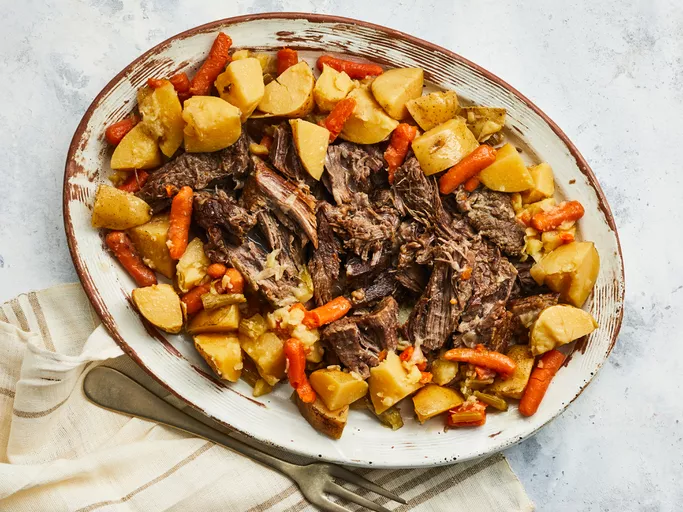

Pot Roast

Description
Looking for a deliciously hearty pot roast recipe that appeals to all palates? This simple Crock-Pot dish boasts a big flavor using just six ingredients. Enjoy a classic beef roast recipe that our community of home cooks comes back to again and again. Learn more about this mouthwatering roast recipe here, including how long to cook roast in the Crock-Pot and the best ways to serve it.
Ingredients
- 6 medium potatoes
- 1 medium yellow onion
- 2 stalks celery
- 1 ½ cups baby carrots
- 1 (3 pound) beef roast
- 3 cubes beef bouillon
- ½ cup water
Steps
- Gather ingredients.
- Cut potatoes, onions, and celery into fairly large chunks; place in the bottom of a slow cooker along with baby carrots. Place roast on top of vegetables. Place 3 bouillon cubes randomly on top of the roast and pour in 1/2 cup water.
- Cover and cook on Low for 6 to 8 hours or on High for 4 to 5 hours. An instant-read thermometer inserted in the thickest part of the roast should read 145 degrees F (65 degrees C).
- Transfer roast to a platter. Remove vegetables using a slotted spoon and arrange them around the roast.